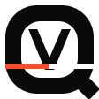
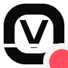

Дизайн-система
Один язык для сайта, программы и материалов. Всё выведено из логотипа: чёрно-белая геометрия, контур Q и прорезь с сигнальной линией.
Принципы
Бренд о том, что сложное происходит само, а человеку остаётся одна кнопка.
- Срез — главный жестПрорезь на 66% высоты из логотипа. Используется в одном крупном объекте на экране: заголовок, большая кнопка, иконка. Сигнальная линия выходит из слова, как маршрут, и никогда не перечёркивает его.
- Сигнальный цвет — только для маршрута#F0502A значит «маршрут построен, VELIQ работает». Не красим им кнопки, фоны и украшения. Ошибки — отдельный красный, всегда со значком и словами.
- Чёрное и белое — основаМонохром, как в логотипе. Глубина — линиями и уровнями фона, а не тенями. Тени — только у всплывающего.
- Факты вместо обещанийПоказываем состояние и замеры. Никаких «ускорим в 10 раз». Иллюстрации подписываем как иллюстрации.
- Одна кнопкаГлавное действие всегда одно и очевидно. Всё остальное — тише.
Тон текста
На «вы», коротко, глаголами. Пишем о пользе, а не об устройстве. Полный набор — в brand/copy.md.
«Маршруты построены: заблокированное открывается, игры идут по самому быстрому пути.»
«Нет связи с сервером. Нажмите «Повторить» — программа попробует другой сервер.»
«Трафик направлен через релей veliq-hel-01 по QUIC.»
«Упс! Что-то пошло не так 😔»
«Снизим пинг в любой игре!»
Логотип
Файлы в brand/logo/ используются как есть: не перерисовывать, не менять цвета и пропорции, не убирать прорезь.


Охранное поле и размер
Поле вокруг — высота буквы V. Минимальная высота словесного знака на экране — 16 px букв (файл 32 px), знака — 20 px. Ниже 20 px используйте иконку трея из brand/icons/.
Нельзя
На сигнальном фоне, растянутым, на пёстром фоне или градиенте.
Цвет
Чернила #0A0A0B и сигнальный #F0502A взяты из логотипа. Остальное — нейтральная шкала и служебные цвета. Все пары текста проходят WCAG AA.
Основа
Нейтральная шкала
Служебные (светлая / тёмная тема)
В коде используйте смысловые токены (--text, --accent, --danger…), а не шкалу напрямую: они сами переключаются между темами.
Типографика
Onest — один шрифт на всё (OFL, кириллица, переменная толщина 100–900, 48 КБ). В программе на Windows запасной — Segoe UI Variable. Цифры — табличные.
54–136 / 0.94Нажал — работает.
Без капслока в подписях, без выделения одного слова цветом, строка текста — до 64 знаков.
Сетка и отступы
Шаг 4 px. Сайт: контейнер 1240 px (1440 px на больших экранах), 12 колонок, поля 16–40 px. Программа: окно 1040 × 680, боковая панель 208 px, поля экрана 32 px. Выравнивание — по левому краю.
Экраны
Телефон от 320 px — одна колонка, кнопки на всю ширину. Планшет 768–1024 — две колонки там, где это помогает. Ноутбук и монитор — полная сетка. От 1680 px контейнер шире, от 2200 px страница масштабируется (1.25, 1.6, 2.0 для 4K), чтобы на телевизоре текст читался с расстояния, а фокус клавиатуры и пульта — крупнее.
Радиусы и тени
Радиус растёт вместе с объектом. Контур Q (36%) — только у главных объектов: большая кнопка и иконка приложения.
Тени
Иконки
Сетка 24, линия 1.75, прямые торцы и острые углы — как буквы V, E, L, I. Скругление — только у круглых форм, как контур Q. Файл: design/icons/sprite.svg. Логотипы чужих сервисов не используем — вместо них монограммы.
Иконка приложения и трей




Трей: серый знак — выключено, половина линии — подключение, полная линия — работает, красная точка — ошибка. Для тёмной и светлой панели задач.
Движение
Движение отвечает на действие или показывает работу маршрута. Одно запоминающееся движение на экран. При «уменьшить движение» в системе всё мгновенно.
Компоненты
Живые примеры из design/components.css. Ими собраны сайт и макеты программы.
Большая кнопка
Кнопки
Переключатели, сегменты, поля
Статусы и метки
Таблица и полоса трафика
График пинга
- обычный путь
- маршрут VELIQ
- второй сервер
Модальное окно и уведомления
Включить режим клуба?
Гость увидит только состояние и кнопку. Настройки откроются по паролю.
Маршруты построены.
Применится к следующему матчу.
Перестраиваем маршрут через другой сервер.